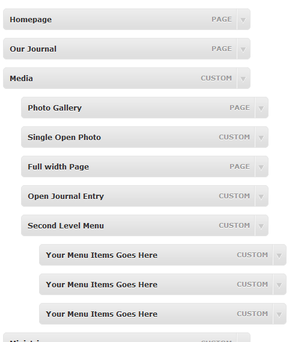
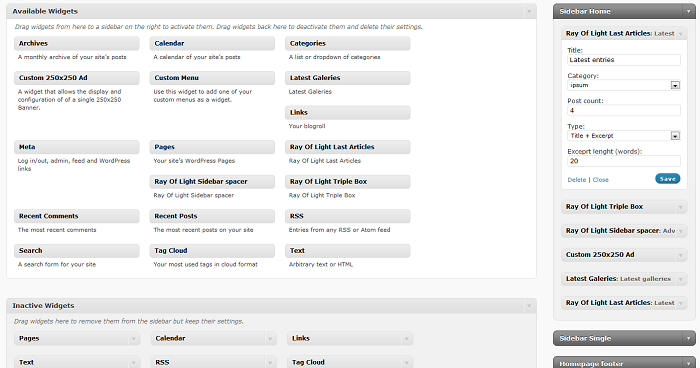
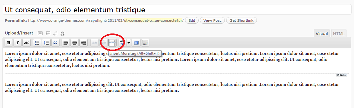
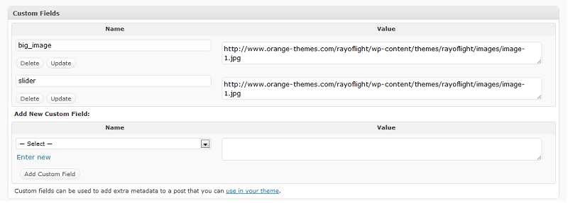

Created: 20/02/2010
By: Orange-Themes.com
Email: support@orange-themes.com
Example page: Ray Of Light Theme
Thank you for purchasing our theme. If you have any questions that are beyond the scope of this help file, please feel free to email via my user page contact form here. Thanks so much!
1) FILE UPLOAD
First you need to upload all theme files to wordpress theme directory (wp-content/themes). After that, make sure you upload all included plugins form the plugin directory to wordpress plugin directory (wp-content/plugins)
2) FILE AND FOLDER PERMISSIONS
After you have uploaded all the files, you have to give them the correct permissions. This can be done using FTP client, such as Filezilla. Locate folder Cache in themes directory and give it and all its subfolders/files Permission level of 777.
Go to Appearance > Menus. Give your menu a name and build it up using little widgets on the right. You can add pages, categories or custom URLs.
Now simply select the theme location for your newly created menus using a widget on the left. Afterwards, click "Save".
See Menu Help for more information.
As you may have probably noticed, after instaling the theme, your right sidebar is empty. We have provided you with an opportunity to completely customizing it to your liking with the use of wordpress Widgets
Go to Appearance > Widgets. You can drag and drop widgets in each of positions. See Widget Help for more information.
This theme comes with built in configuration page, that allows you to easily change pages Logo, add Social Share Icon Links and Manage Footer content and more. Just see Theme Configuration page on your wp-admin. It's under Appearance tab. See further explanations on the page.
Ray Of Light Theme uses a lot of different sized post thumbnails that help your site look very professional.
Ray Of Light has many ways to set post thumbnails
All of Ray Of Light CSS file is located within css direcrory. Edit with caution!
It is recommended that you place a "read more" tag in your every post. You should also try not to make the part of post, that is before "read more" tag too long. 
See Wordpress Help for more information.
Go to homepage tab in your theme configuration page on wp-admin. There you can see specific guidance about setting up your homepage.
You have the option of disabling slider/ using static picture or using slider. You can add specific images to your homepage slider using custom field with name "big_image" and image URL as a value. Follow instructions given on the page.
This panel also allows you to disable/enable info blocks - four blocks that hold any information you wish to show, picture and a link. For example, you could have blocks like - Support, Team, About, Shop etc. Paste links to your chosen images, or just grab the ones stored in theme images folder. Read more url should hold a Url to a post or page on your blog.
Homepage footer is the lowest part of your themes homepage. There you can show the contents of a post (or just part of the content, if you have set the "read more tag"). Select chosen post from dropdown box and click submit. This section also has space for widgets, that you can edit from widget section.
Go to Blog tab in your theme configuration page on wp-admin. There you can see specific guidance about setting up your blog.
There you can enable/disable homepage slider. You can add specific images to your homepage slider using custom field with name "slider" and image URL as a value.
You have the option showing or not showning thumbs on the first page. Use checkboxes that are given, to edit these settings.
Post settings allow you to filter images and other objects (such as videos) from first blog page (recommended). If these items are shown, they will be resized accordingly.
Go to "pages" section of your wp-admin and create new page. On the right side of page, you will find "template" section. Choose "gallery" from the drop down, click publish.
Now you can go to "Gallery" tab on your wp-admin and add new items. You have to choose thumbnails for gallery, just like you would do it for normal post. Every picture you upload to gallery will be shown.(you don't need to include them in post content.). You can write description about gallery in text field.
Under "Theme Configuration" page on your wp-admin you can edit the number of gallery items shown per page.
Go to "pages" section of your wp-admin and create new page. On the right side of page, you will find "template" section. You will have 3 options of portfolios there - single, two or three column portfolios. Choose the one you like from the drop down, click publish.
Now you can go to "Portfolio" tab on your wp-admin and add new items. You have to add picture as thumbnails, just like you would do it for normal post. You can write description about portfolio item in text field.
Under "Theme Configuration" page on your wp-admin you can edit the number of gallery items shown per page.
More information about shortcodes You can find on our web page
Once again, thank you so much for purchasing this theme. As I said at the beginning, I'd be glad to help you if you have any questions relating to this theme. No guarantees, but I'll do my best to assist. If you have a more general question relating to the themes on ThemeForest, you might consider visiting the forums and asking your question in the "Item Discussion" section.
Orange Themes